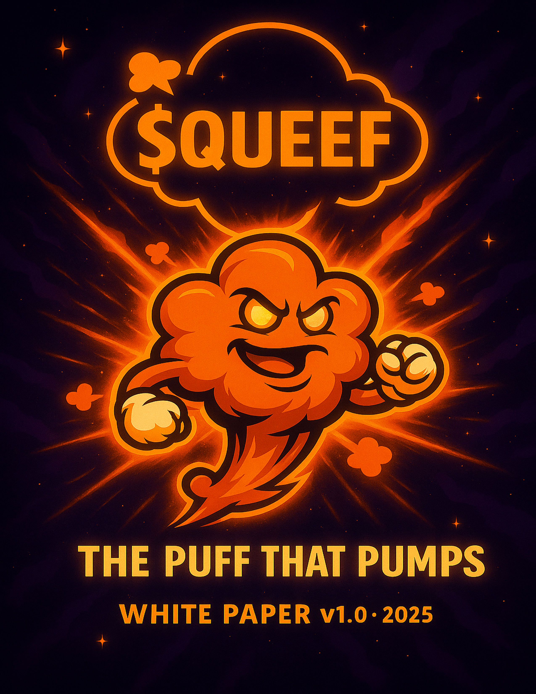

Table of Contents
1. Abstract — THE PUFF THAT PUMPS 💨🚀
Play Hard. Pump Harder. 📈
Solana’s been sweating: rugs, memes, endless degens grinding the chain. All that hype? All that motion? It built up something no one could hold in.
And then it happened.
The release. The prophecy. The QUEEF. 💨✨
Born from trapped chaos and pure degen joy, $QUEEF blasts louder, prouder, and wilder than the rest. It’s not bottled-up bullshit — it’s the puff that proves pressure creates legends.
This isn’t just another memecoin.
It’s the glow-up. The aftershock. The puff the timeline didn’t see coming — and the chain couldn’t contain.
LOUD. PROUD. FERAL.
$QUEEF is play turned power. Meme turned movement. Puff turned prophecy.
Because when Solana needed a hero, it didn’t get a dog or a cat.
It got a QUEEF. 💨🔥
2. Executive Summary — The Puff That Rules
$QUEEF isn’t here to whisper. It’s here to blast. 💨
Launched on Solana via BONK.fun bonding curve, $QUEEF is built on four unshakable pillars:
- Meme Momentum 💨 – Fueled by lore, art, and the power of the Queef community.
- The Puff That Burns 🔥 – Puff Dodge, the first burn-per-play arcade, where every run shrinks supply and pumps the prophecy.
- The Puff That Rules 🗳️ – DAO-lite governance (the Destiny Allocation Oracle), where holders vote on burns, treasury moves, partnerships, and meme crusades.
- The Puff With Purpose 💝 – Community-voted causes and charitable campaigns proving memes can pump and give back.
Key Features:
- Fixed Supply: 69,000,000 $QUEEF (nice).
- LP Locked Forever: BONK.fun → Raydium migration, rug-proof.
- Dev Allocation Slashed: From 10% → 1% after community feedback.
- Transparent Wallets: Dev, DAO, Game, Merch, Rewards — all visible.
- Revenue Loops: Gameplay + merch sales → burns, rewards, DAO treasury.
Why it matters: Meme coins live on hype. Most die on silence.
$QUEEF is engineered to stay loud — combining memetic lore, real deflation, community governance, and a culture too feral to fade.
Because when Solana needed a hero, it didn’t get another dog or cat.
It got a QUEEF. 🚀🌕
This is not just a coin. This is the puff that pumps. 🚀
3. Market Opportunity — Why the Puff Pumps Now
The crypto trenches are louder than ever: rugs, dogs, cats, frogs, fish — the memecoin wars never stop. But memes alone fade. To survive, a coin needs hype + mechanics + culture.
That’s where $QUEEF comes in.
3.1 The Rise of Meme Coins
- Billions in Volume: BONK, WIF, POPCAT, PNUT, JustaChillGuy, Pepe, and countless others have proven that memes aren’t side-shows — they’re the main show of Solana and crypto culture.
- Community First: Meme coins thrive not because of tech, but because of believers, memes, and lore.
- Problem: Most memes rug, fade, or die when hype cools.
3.2 GameFi Demand
- Play-to-Burn > Play-to-Earn: Traditional P2E failed because emissions killed value. $QUEEF flips the model with deflationary play.
- Puff Dodge: The first meme-arcade where every run burns tokens, pumps scarcity, and drives FOMO.
- Replayability: Quick, fun, and addictive — a model proven by games like Flappy Bird and Subway Surfers.
3.3 DAO as a Differentiator
- DAO-lite → Full DAO: While most meme coins are opaque, $QUEEF builds community governance into the treasury from day one.
- Trust + Transparency: Public wallets, multisig execution, live dashboards.
- Narrative Power: A prophecy owned and steered by its believers.
3.4 Why $QUEEF Wins
$QUEEF sits at the intersection of:
- Meme Mania 🚀 — tapping into Solana’s strongest cultural wave.
- Deflationary Mechanics 🔥 — burns hard-coded into play and merch.
- GameFi Fun 🎮 — a sticky arcade loop with leaderboard clout.
- DAO Power 🗳️ — transparency, control, and purpose baked in.
- Chaotic Good Narrative 💨 — loud, feral, underdog hero energy.
3.5 The Timing
- Solana is thriving with low fees + high speed → perfect for micro-burn gameplay.
- Meme seasons are cyclical, and the next wave is brewing.
- Communities are hungry for more than just hype — they want fun + transparency + movement.
When hype meets mechanics meets prophecy… that’s when charts explode.
4. Queefonomics (Tokenomics)
4.1 Overview
$QUEEF is a fixed-supply Solana token launched via BONK.fun bonding curve, ensuring permanent liquidity and fair distribution. The tokenomics model emphasizes transparency, deflationary design, community governance, and sustainable growth through gameplay and merchandise revenue.
4.2 Total Supply
- Total Supply: 69,000,000 $QUEEF
- Supply Type: Fixed (no inflation or additional minting)
- Decimals: 9
- Contract Address: 43AJD4sVmEChP1pDmXRZTYbrV73JhUVTrFXz9GNabonk
4.3 Launch & Liquidity
- Launch Method: BONK.fun bonding curve
- Locked LP: ~80%+ supply paired with SOL at launch and permanently locked (LP tokens burned after migration to Raydium)
- Public Holders: Tokens acquired through bonding curve at launch
- Dev Allocation: Initially 10% of supply, reduced to 1% after community feedback to minimize rug risk and keep the project community-centric
- Locking Policy: Dev allocation is not locked; however, any future dev purchases will have 50% locked to promote trust and long-term alignment
4.4 Wallet Structure
- Locked LP Wallet! — Permanent liquidity from BONK.fun bonding curve → Raydium migration
- Public Holder Wallets — Majority of supply held by community
- Developer Wallet (1%) — Reduced from 10% → 1% after community feedback; not locked, but future dev purchases lock 50%; used for operations, development, and incentives
- DAO Treasury Wallet 🗳️ — Receives share of game + merch revenue; community-controlled via DAO votes; may fund liquidity adds, burns, rewards, partnerships, marketing, charity
- Game Revenue Wallet — Source: Puff Dodge in-game purchases; split into Dev / DAO / Leaderboard / Burn allocations
- Leaderboard Rewards Wallet 🏆 — Rewards Top 10 Puff Dodge players; distributed weekly/monthly
- Merch Revenue Wallet — Source: Net profits from merchandise sales; split: 60% Dev / 30% DAO / 10% Buyback & Burn 🔥; special charitable drops: 100% → DAO Treasury for causes
4.5 DAO Governance
- Voting Eligibility: Threshold TBD at launch; adjustable if token price surges
- Treasury Usage: DAO votes on burns, liquidity, partnerships, charity
- Transparency: All wallets publicly labeled + trackable via Solscan
- Flexibility Clause: DAO may adjust revenue allocations as project matures
4.6 Burn Mechanics
- Automatic Burns: From game revenue + merch buybacks → Solana incinerator 1nc1nerator11111111111111111111111111111111
- DAO Burns: Treasury can vote additional burns
- Execution: Batched weekly for efficiency + on-chain proof
4.7 Charitable Initiatives – Puff With Purpose
- DAO allocates funds directly to charities
- Special Puff With Purpose merch drops: 100% profits → DAO for voting
4.8 Summary
- Rug-proof launch: BONK.fun → Raydium LP locked & burned
- Dev allocation cut 10% → 1% after feedback
- Future dev purchases: 50% lock guarantee
- DAO Treasury governs burns/liquidity/community growth
- Gameplay + merch revenue fuel deflationary model
- Supply = deflationary — circulating tokens continuously reduced by burns
If you know, you puff.
5. Burn Mechanics & Treasury Flow
5.1 Launch Phase (Months 0–3)
To create early scarcity and community hype, $QUEEF adopts an aggressive burn model:
- Burn Percentage: 50% of all game revenue (entry fees + in-game purchases).
- Revenue Split:
- 10% Dev Wallet – operations, hosting, updates
- 20% DAO Treasury – governance-controlled initiatives
- 20% Leaderboard Rewards – distributed weekly to top players
- 50% Burn – sent immediately to Solana’s incinerator address:
1nc1nerator11111111111111111111111111111111
- Minimum Entry Fee: 200 $QUEEF per leaderboard-eligible play
- In-Game Purchases: Power-ups, skins, revives, etc. follow the same split as above
This ensures rapid supply reduction while building a substantial DAO treasury for future governance.
5.2 DAO Governance Phase (Month 4+)
After the launch phase, burn mechanics become DAO-controlled. The DAO will vote quarterly (or at a frequency it later determines) on:
- Burn percentage
- Entry fee minimum
- Leaderboard reward allocations
- DAO treasury share
- Frequency of governance votes
Changes are applied via backend-controlled logic initially, secured by multisig for transparency. Long-term, the system will migrate to a light Solana program, allowing on-chain updates to splits, followed by full DAO-managed treasury and burns.
5.3 Burn Visibility
- Real-Time Burn Tracker in-game and on the website
- Public Wallet Links for Dev, DAO, Leaderboard, and Burn allocations
- Leaderboard Recognition: Top 1–3 players earn the majority of rewards, while ranks 6–10 receive recognition/participation bonuses to encourage engagement
5.4 Special & Scheduled Burns
Beyond automated mechanics, burns may also be triggered by DAO votes or Dev-scheduled events, e.g.:
- Pre-exchange listing Hype Burns
- Community milestone celebrations
- DAO-directed treasury burns
These events provide additional deflationary pressure while giving the community visible participation in shaping the $QUEEF economy.
6. Governance — From Trenches to Treasury
The Puff was born in the meme trenches — chaos, energy, and community hype forged it into prophecy. Because the Puff came from the people, it must always be driven by the people.
That’s why $QUEEF governance evolves into DAO-lite after migration, once the community is strong enough to carry it. From there, the DAO becomes the engine of burns, rewards, stability, and purpose.
6.1 DAO-lite Activation
- Trigger Conditions: DAO-lite activates only when:
- Migration is complete ✅
- At least 1,000 unique holders ✅
- At least 30% of supply circulating outside dev/DAO wallets ✅
- Treasury Wallet (DAO Wallet): The DAO wallet is the community treasury. It receives inflows from Puff Dodge game revenue 🎮, Merch revenue (quarterly, with audits) 🛍️, Dev contributions 💼 (voluntary), Community donations 💝
The puff fuels the treasury, and the people decide where it flows.
6.2 Wallet Structure & Smart Contract Flows
- Game Revenue Wallet: All game entry fees & purchases land here. Smart contract automatically splits allocations into: Dev Wallet (10%), Leaderboard Wallet (20%), DAO Wallet (20%), Burn (50%) → Solana Incinerator.
- Leaderboard Wallet: Receives its allocation automatically from the Game Wallet. Payouts to top players handled automatically on a weekly/seasonal basis.
- DAO Wallet (Treasury): Receives allocations from game, merch, donations, and dev contributions. Controlled by holders through DAO-lite → full DAO. DAO can adjust Game & Leaderboard allocations quarterly.
6.3 Governance Parameters
- Voting Power: 1 vote per 69,000 $QUEEF.
- Eligibility: Must hold ≥69,000 $QUEEF to vote or propose.
- Voting Window: 5 days.
- Quorum: 20% of circulating supply required for validity.
- Pass Threshold: >50% majority.
- Execution: Approved proposals executed by multisig within 7 days.
The puff doesn’t move unless the people show up.
6.4 Proposals — How They Work
- Who Can Propose: Any eligible holder (≥69,000 $QUEEF) or coalitions pooling to reach the threshold.
- Submission: Via DAO dashboard (clear proposal: burns, allocations, rewards, initiatives).
- Validation: Multisig council ensures proposals are legitimate and executable.
- Voting: Opens immediately → runs 5 days.
- Cadence: Monthly governance cycles for standard proposals. Quarterly reviews for tokenomics parameters (burn %, revenue splits, fees) to prevent churn.
6.5 What the DAO Can Control
The Puff flows where the people will it:
- Revenue Splits — Game, merch, donations.
- Burn Rates — Adjust deflation dial quarterly. 🔥
- Game Costs — Entry fees, power-up pricing.
- Leaderboard Rewards — Pool size & distribution.
- Holder Distributions — Direct rewards to puff believers.
- Treasury Burns — Vote to send funds to the incinerator.
- Liquidity & Buybacks — Allocate treasury funds to stabilize the puff.
- Puff With Purpose — Charitable allocations.
6.6 DAO-lite vs Full DAO
- DAO-lite (Phase 1): Transparent wallets on Solscan. Off-chain token-weighted voting dashboard (snapshot-style). Multisig executes passed proposals. Monthly cycles for regular proposals; quarterly for tokenomics reviews. Extraordinary votes if ≥10% of supply signs petition.
- Full DAO (Phase 2): On-chain Solana governance (Realms, Squads, etc.). Voting remains 1 vote per 69,000 $QUEEF (eligibility intact). Automatic execution: burns, transfers, splits run on-chain. Full decentralization: the puff runs itself.
6.7 Transparency & Reporting
- Live DAO Dashboard: Treasury balance 💰; Public wallets 🔗; Real-time burn counter 🔥; Game + merch revenue feeds 🎮🛍️; Dev & community contributions 💼💝; Active proposals & vote status 🗳️; Final results ✅
- Quarterly Reports: Summaries of inflows/outflows; Merch revenue audits; Burn metrics; Commentary digest for believers & investors
6.8 DAO Multisig Council & Emergency Powers
- Council Composition (DAO-lite): Initial council = dev team + 2–3 trusted community reps. Once DAO-lite activates, community elects future council seats via Telegram poll.
- Emergency Powers: Multisig may act in emergencies (contract exploits, hacks). Must disclose actions within 48 hours and seek retroactive DAO approval.
The prophecy is transparent. The Puff belongs to the people.
7. Treasury & Wallet Transparency
$QUEEF is prophecy, but it’s also proof. No shadows. No rugs. No games with the numbers. The Puff is loud, proud — and transparent.
All wallets tied to $QUEEF are publicly labeled and traceable on Solscan. Every puff in, every puff out, every burn, every prize pool — visible in real time.
7.1 Core Wallets
- DAO Treasury Wallet 🗳️ — The community’s pool. Receives allocations from game revenue, merch revenue (quarterly with audits), dev contributions, and community donations. Controlled by DAO-lite → full DAO.
- Game Revenue Wallet 🎮 — Collects all $QUEEF from entry fees and purchases. Smart contract automatically splits to: Dev, Leaderboard, DAO, Burn.
- Leaderboard Wallet 🏆 — Receives its cut from the Game Wallet. Pays out leaderboard rewards automatically on a weekly/seasonal basis.
- Burn Address 🔥 — Irrecoverable Solana incinerator:
1nc1nerator11111111111111111111111111111111(proof of sacrifice, visible on-chain). - Dev Wallet 💼 — Reduced from 10% → 1% of total supply. Future dev purchases: 50% locked by policy. Also receives a 10% allocation from game revenue. Dev may voluntarily contribute to DAO wallet.
7.2 Transparency Features
- Public Labels: All wallets named and linked on Solscan.
- Real-Time Burn Tracker: Website + in-game counter shows tokens burned live.
- DAO Dashboard: Dedicated microsite displaying: Live DAO treasury balance; Game + merch inflows; Dev + community contributions; Active proposals + voting results.
- Quarterly Reports: Treasury digest (all inflows/outflows); Merch revenue audit results; Burn metrics + progress toward supply milestones.
7.3 Why It Matters
- Locked LP = no rug liquidity pulls.
- Public wallets = trustless proof, not promises.
- DAO control = no single hand on the treasury.
The Puff doesn’t just speak prophecy. It shows receipts.
8. Game Mechanics — Puff Dodge
“Every dodge is prophecy. Every puff is deflation.”
Puff Dodge is the official meme-powered browser game of QueefCoin ($QUEEF). Players control Queefy, our chaotic puff mascot, dodging rugs, FUD, and scam coins while stacking $QUEEF coins and power-ups.
The game fuses fast-paced arcade gameplay with real token economics, embedding burn mechanics, governance, and $QUEEF utility directly into play.
8.1 Core Gameplay
- Mode: Side-scrolling dodge runner. Queefy moves forward automatically; player controls vertical movement.
- Lives: Start with 3. Lose 1 per hit. Game ends at 0.
- Scoring: Distance + coins. Multipliers (2× / 5× / 10× / 100×) apply for 5s during their active window.
- Difficulty: Ramps every 15s with faster speed, more obstacles, and tighter clusters.
- Controls: Desktop: Hold Space / ↑ / W to rise, release to fall. ↓ / S for quick-drop. Mobile: Tap & hold to rise, release to fall. Swipe down for quick-drop.
8.2 Power-Ups, Inventory & Store
- Inventory Bar: Max 3 slots per run.
- Pre-Load: Players may pre-load up to 3 items before a run.
- Activation: Tap/click (mobile/desktop) or 1 / 2 / 3 hotkeys (desktop).
- Consumable: Reset each run, no persistence between sessions.
- Power-Up Variants (Locked):
- +1 Life
- +3 Lives
- Shield (3 hits)
- Shield (5s duration)
- Slow-Mo (5s)
- Score Multipliers (2×, 5×, 10×, 100× for 5s)
8.3 Burn Integration & Game Modes
Practice Mode (Free-to-Play):
- No wallet required.
- Mock burn mechanic: each run displays “🔥 200 $QUEEF could have been burned.”
- Global FOMO Counter: For every practice run, the site tracks 50% of entry fee (100 $QUEEF) as “could-have-burned.” Counter visible on the website for maximum hype.
- No leaderboard, no rewards.
Competitive Mode (200 $QUEEF / Run):
- Requires Solana wallet connect (Phantom, Backpack, etc.).
- Entry fee split automatically per QueefCoin tokenomics: 10% Dev / 20% DAO / 20% Leaderboard / 50% Burn 🔥
- Real-time counters show actual burns + allocations in-game and on the website.
- Store purchases (power-ups, cosmetics) follow the same split.
Every competitive run pumps the prophecy.
8.4 Leaderboard & Rewards
- Global Rankings: Wallet, Username, Score, Distance, Coins, Date.
- Epoch: Rewards distributed monthly by default (DAO can vote to adjust).
- Top 10 rewarded, Top 3 take the majority.
- Cosmetics: Frames, highlights, and icons earned from ranks or purchased in-store.
- Profile Tracking: Wallet + Username, best score, cosmetic unlocks.
8.5 Cosmetics & Customization
- Earned: Leaderboard rewards, seasonal ranks.
- Purchased: In-game store with $QUEEF.
- DAO Control: DAO can vote quarterly to add/remove cosmetic rewards, adjust prices, or introduce exclusive drops.
8.6 Wallet Security & Integration
- Non-custodial, least-privilege design.
- Supported Wallets: Phantom, Solflare, Backpack (via Solana Wallet Adapter).
- Authentication: Sign-in with Solana (nonce + domain + expiry).
- Transactions: Only requests signTransaction for entry fees and purchases. Users see exact amounts, recipients, and memos before signing.
- Burns: Verified SPL transfers to Solana’s incinerator address.
- Anti-Cheat: Server verifies run data vs spawn seeds to block spoofing.
- Custody: No seed phrases ever handled; rewards distributed via DAO multisig.
8.7 DAO Expansion & Control
- Entry fee for competitive runs.
- Power-up & cosmetic pricing.
- Reward pool distribution model.
- Revenue split percentages (Dev / DAO / Leaderboard / Burn).
8.8 Art & Experience
- Playable Character: Queefy (additional skins in Phase 2).
- Obstacles: Rugs, FUD placards, scam fartcoins.
- Biomes: Cosmic backgrounds + themed parallax environments.
- SFX: Puff bursts, coin pings, shield hum, hit thuds, “Pump the Puff 💨” stinger.
8.9 Roadmap Alignment
- Phase 1: MVP launch — Practice + Competitive, burn mechanics, store, leaderboard, inventory.
- Phase 2: Cosmetics & skins, seasonal backgrounds.
- Phase 3: DAO-voted adjustments to splits, burns, and rewards.
- Phase 4: Puff Dodge 2.0 — expanded gameplay, NFT unlockables, deeper DAO utility.
9. Brand Identity — Loud. Proud. Feral.
The Puff isn’t just a coin. It’s the release, the chaos, the prophecy turned culture. Every color, logo, slogan, and hashtag doesn’t just brand $QUEEF — it pumps it louder.
9.1 Brand Colors
$QUEEF runs bold, cosmic, and high-contrast — so the prophecy always stands out.
The Puff shines brightest against the void.
9.2 Typography
- Headlines & Slogans: Luckiest Guy — bold, meme-native, impact lettering.
- Body: Rubik 400/700 — modern, legible, flexible.
- Style: Big, punchy headings. Short, hypey. Never corporate.
9.3 Mascot — Queefy 💨
- Core Form: An expressive orange puff cloud with a vapor trail instead of legs.
- Design: BONK-style shading + bold outlines.
- Features: Arms with gloves (often diamond hands 🧤). Face = expressive, feral, cheeky, sassy and meme ready. Vapor/puff blast trail = motion & energy.
- Variants: Hero pose, power pose, celebrate, cosmic, alt moods.
- Rule: Queefy = chaotic good, never generic, always recognizable.
9.4 Logos
- Primary Logo: Cosmic orange puff with $QUEEF text, accents.
- Minimal Logo: Puff outline with $QUEEF inside.
- Merch Variant: Store logo and other variants simplified for apparel.
- Favicon Set: For site + game assets.
- Game Logos: Puff Dodge & other expansions.
- Usage: Web, game, socials, merch, dashboards.
9.5 Slogans
- Pump the Puff 💨 (rally cry)
- Puff Believer 💨 (identity for holders / community pride)
- Puff Powered ⚡ (strength + unity)
- Glorify the Puff 🔮 (lore-driven hype)
9.6 Hashtags
Core: #PumpThePuff • #DontFadeThePuff • #PuffPowered • #QueefCoin
Expansion: #PuffBeliever • #QueefArmy • #PuffTheDip • #BlowUpTheCharts • #BonkPowered
Situational/Trend Hijack: #SolanaDegens • #AltSeason • #FOMO • #LFG
9.7 Core Personality
- Alignment: Chaotic good.
- Traits: Feral, sassy, cheeky, bold, confident, fun.
- Identity: Meme prophet. Underdog hero.
- Limits: Bold & irreverent, sometimes NSFW — but never outright offensive or FUD.
9.8 Voice & Tone
- Bold & Punchy: short, powerful, meme-native
- Witty & Playful: Wordplay, lore, double meanings, inside jokes.
- Sassy & Irreverent: Not corporate, never boring. always puffed
- Community-Centric: “We” over “I.”
Rules: ✅ Celebrate wins loudly, roast FUD cheekily. ✅ Always tie hype back to prophecy. ❌ Never neutral or generic. ❌ No corporate jargon.
In short: LOUD. PROUD. FERAL.
The Puff is prophecy, and the brand makes sure you feel it in every color, slogan, and meme.
10. Merch Ecosystem — Puff Gear, No Shame
$QUEEF doesn’t just live on-chain. It lives on your chest, your phone case, your hoodie, your mug. The merch is meme, the meme is money, and the revenue powers the prophecy.
10.1 Store Setup
- Access: A dedicated online merch shop will launch soon.
- Announcement: The official store link will be revealed through QueefCoinSOL.com and socials at launch.
- Token-Gated Perks: Holders unlock discounts and exclusive drops by connecting their wallet.
10.2 Product Line
- Apparel: Tees, hoodies, beanies, joggers.
- Accessories: Phone cases, mugs, stickers, posters.
- Seasonal Drops: DAO-voted limited editions (ex. Puff Army Hoodies, Queefy plushies).
- Charitable Merch: “Puff With Purpose” campaigns with 100% profits directed to DAO-voted causes.
10.3 Revenue Flow & Transparency
- Quarterly Contributions: Net merch profits transferred into DAO Treasury.
- Quarterly Audit Reports: Each distribution is accompanied by a transparent audit of sales, expenses, and allocations, published publicly.
- Initial Split: 60% Dev/Operations • 30% DAO Treasury • 10% Burn 🔥 (sent to Solana incinerator). DAO can adjust quarterly.
10.4 Holder Benefits
- Discounts: % off all merch for Puff Believers (wallet connect).
- Exclusive Drops: Holder-only editions (DAO can vote designs).
- Status Flex: Leaderboard champs may unlock cosmetic merch badges or limited items.
10.5 Brand Expansion
Merch = meme amplifier. Every hoodie or sticker is free advertising on the streets and socials.
DAO may vote to expand into collabs with other meme projects (BONK, WIF, etc.) for crossover hype.
Special campaigns can tie burn events to merch sales → e.g., “🔥 Every hoodie sold burns 1,000 $QUEEF.”
Wear the prophecy. Pump the Puff.
11. Puff With Purpose — Turning Memes Into Meaning
The prophecy isn’t just about pumping charts 🚀 — it’s about pumping change 🔥. Puff With Purpose is $QUEEF’s community-powered mission to prove memes 💨 can move more than markets — they can move the world 🌍.
11.1 Why It Exists
- Real-World Impact — While we’re building a loud, proud, chaotic community of degens 🐸, we also channel that energy into causes that make a tangible difference 💎.
- Expanding the Puff — Connecting impactful causes with meme culture showcases the power of crypto 🌕 to do good, grows awareness of $QUEEF, and invites more people into our movement.
11.2 How It Works
- DAO-Directed Giving 🗳️ — Funds from the DAO Treasury are deployed only after a community vote decides how much to give and where it goes.
- Special Campaigns 👕🖼️ — Limited merch drops, themed events, NFT auctions, and more tied to a cause send 100% of proceeds directly to that purpose.
- Creative Impact Events 🎮 — Puff Dodge challenges, meme raids, and community contests that channel hype into action.
- Transparency: All donations and allocations are on-chain, visible in labeled wallets. Quarterly reports published with receipts, merch audits, and meme recaps.
11.3 Possible Focus Areas (Chosen by DAO)
- 🌍 Global Impact — Disaster relief, clean water, environmental action.
- 🤝 Community Uplift — Grassroots movements, underdog causes, local initiatives.
- 🔗 Crypto for Good — Blockchain solutions for social or environmental problems.
- ⚡ Rapid Response — Puff-powered aid delivered fast where it’s needed most.
11.4 The Vibe
This isn’t just about memes 🐸. It’s about building something that gives back — together.
Turning viral chaos into real-world impact 🌕, one glorious puff at a time 💨.
Puff With Purpose. Give where it matters.
#PumpThePuff • #DontFadeThePuff • #PuffPowered • #QueefCoin
12. Technical Overview — The Puff Runs on Code
Behind the prophecy is a real system of contracts, wallets, and code. $QUEEF is loud and chaotic on the surface, but under the hood it runs on a transparent, efficient Solana stack.
12.1 Token Contract
- Chain: Solana (SPL Token Standard).
- Supply: 69,000,000 $QUEEF (fixed, no inflation).
- Decimals: 9.
- Contract Address: 43AJD4sVmEChP1pDmXRZTYbrV73JhUVTrFXz9GNabonk
- Launch: BONK.fun bonding curve → liquidity permanently locked on Raydium.
- Wallet Labels: Dev, DAO, Leaderboard, Game, Burn (publicly visible on Solscan).
12.2 Governance Stack
- Phase 1 (DAO-lite): Off-chain voting dashboard (snapshot-style). Token-weighted voting (1 vote per 69,000 $QUEEF). Multisig executes proposals. Monthly governance cycles; quarterly reviews for tokenomics parameters.
- Phase 2 (Full DAO): On-chain governance using Solana tooling (Realms, Squads). Automatic execution of treasury actions (burns, allocations, splits). Public DAO dashboard for proposals + results.
12.3 Game Infrastructure — Puff Dodge
- Frontend: Browser-based (HTML5/JS). Hosted on a dedicated Puff Dodge site (URL revealed at launch).
- Backend: Firebase (or equivalent) to handle leaderboard, validation, anti-cheat.
- Wallet Integration: Solana Wallet Adapter (Phantom, Backpack, Solflare).
- Burn Execution: On-chain transfer of 50% of entry fees → Solana incinerator address.
- Security: SignTransaction only (users see amounts + recipients before signing). No seed phrases ever handled. Leaderboard payouts via DAO multisig. Server-side anti-bot + score validation.
12.4 Website & Dashboards
- Main Site: QueefCoinSOL.com — prophecy hub with roadmap, tokenomics, burn tracker.
- DAO Microsite: Live treasury balances, burn counter, inflows/outflows, proposals, voting status/results.
- Game Portal: Puff Dodge integrated once live, with leaderboard + real-time burn tracker.
- Transparency: All wallets + burns linked directly to Solscan.
12.5 Security & Reliability
- Multisig Custody: Dev + community reps sign treasury actions in DAO-lite.
- Emergency Powers: Dev multisig can act if exploit occurs; mandatory DAO disclosure + retroactive approval.
- Audits: Token contract & game logic to undergo independent review.
- Quarterly Reports: Transparency reports published for merch, treasury, and burns.
12.6 Automation Architecture
- Phase 1 (DAO-lite): Game revenue lands in the Game Wallet. Smart contract (or scheduled multisig execution) splits: 10% Dev, 20% DAO, 20% Leaderboard, 50% Burn. All transactions public and auditable.
- Phase 2 (On-chain Programs): Revenue Splitter Program; Rewards Distributor Program; Parameter Registry — with parameters adjustable only quarterly by DAO vote. Game + dashboards read directly from registry so parameters always match.
The Puff may be prophecy — but the code is real, public, and built to last.
13. Security & Compliance — Proof Over Promises
Memes may be chaos, but money demands trust. $QUEEF secures the prophecy with transparent systems, standardized launch contracts, and protections against rugs, bots, and fraud.
13.1 Token Security
- BONK.fun Standard: $QUEEF launched via BONK.fun’s audited bonding curve. No custom mint code, no hidden inflation, no backdoor rug switches.
- Fixed Supply: 69M tokens — capped forever.
- LP Locked: BONK.fun → Raydium migration with liquidity permanently locked.
- Dev Allocation Reduced: From 10% → 1%, with policy that 50% of future dev buys are locked.
- Burns: All burns go directly to Solana’s official incinerator wallet.
13.2 Multisig Custody
- DAO-lite: Dev wallet actions and treasury allocations require multisig (dev + community reps).
- Full DAO: On-chain governance removes dev custody entirely.
- Emergency Powers: Dev multisig may act only to protect funds in case of exploit — must disclose actions and seek retroactive DAO approval.
13.3 Game & Platform Security
- Wallet Integration: SignTransaction only — no custody, no seed phrases.
- Anti-Bot: Server-side validation of scores, spawn-seed checks, rate-limiting, heuristics.
- Fair Play: Suspicious scores flagged + appeal process. DAO reserves the right to adjust or revoke rewards in cases of exploit or manipulation.
- Leaderboard Rewards: Payouts via DAO multisig or audited Rewards Distributor program.
13.4 Audits & Testing
- Token Contract: BONK.fun launch means mint logic already follows audited, standardized contracts.
- Custom Programs: Future $QUEEF smart contracts (Revenue Splitter, Rewards Distributor) will undergo independent audit before DAO migration.
- Upgradeability: Any upgrades can only occur via DAO-approved vote + timelock, not by dev discretion.
- Game Logic: Puff Dodge code reviewed before full release.
- Merch: Quarterly revenue audits confirm DAO transfers + burns.
- Bug Bounty: Community members who find and disclose vulnerabilities may receive rewards by DAO vote.
13.5 Regulatory & Legal
- Not a Security: $QUEEF is a brand, a meme, and a community token — not a financial product or investment contract.
- No Guarantees: No yields, no staking, no dividends, no promises of profit.
- Jurisdictions: $QUEEF is not publicly offered in any regulated jurisdiction. Participation is voluntary and at your own risk. KYC may be required for certain third‑party services; those are outside our control.
- Transparency: Public docs, labeled wallets, dashboards, quarterly reports.
- Backstop Power: DAO may vote to replenish the Leaderboard Wallet or other allocations in case of exploit.
- Upgrade Rights: Smart contract upgrade rights controlled by the DAO once live.
The Puff is prophecy, not a promise. It’s a brand, a meme, and a movement — secured by transparency, not guarantees.
14. The Puff Plan — Prophecy in Motion
📜 The prophecy isn’t just told — it’s lived. Each phase unleashes the Puff louder, bolder, and harder to fade, carrying $QUEEF from a meme into legend.
Phase 1: Puff Origin — The First Breath
Where it all begins — one puff, infinite potential.
- ✅ Genesis drop on Solana via BONK.fun (because obviously it’s the best)
- 💬 The First Gathering — Telegram opens
- 🐦 Twitter/X — The Puff Speaks
- 📦 Sticker packs, GIFs & Telegram bots unleashed
- 🌐 Website & meme-grade whitepaper goes live
- 📜 Lore Drop #1 — “The Puff Prophecy” — cinematic launch reel reveal
Phase 2: Pump the Puff — The Cult Takes Shape
We meme. We build. We grow feral.
- 🚀 Meme Raids: Operation Cloudburst
- 🎨 Meme War Contests w/ $QUEEF rewards (judged by community)
- 🛍️ Merch Store Launch — Puff Gear, No Shame
- 💸 Holder-Only Merch Discounts
- 🕹️ Puff Dodge DEMO — “The Trial Run”
- 🔥 Mini Burn #1 — symbolic start to the prophecy
- 🤝 Alliances with BONK-affiliated projects
Phase 3: Puff Unleashed — The Prophecy Manifests
We burn. We roar. We make the Puff unstoppable!
- 🕹️ Puff Dodge FULL Release — Burn-Per-Play unlocked
- 🌍 Global Leaderboards go live
- 🗳️ DAO-lite voting begins for burns & treasury moves
- 🔥 The Great Burn — the first prophecy-scale sacrifice, united by the community
- 🧢 Themed Restock Drops (Holder-Only Discounts)
- 👀 Lore Drop #2 — “The Puff Takes Form”
Phase 4: Puff With Purpose — The Mission Awakens
The joke becomes a quest — We vote. We give. We blow for change.
- 🗳️ DAO chooses the first Puff With Purpose cause
- 💝 Charitable merch for chosen cause
- 🤝 Partnerships with mission-aligned builders
- 📊 Transparent donation & burn tracker goes public
- 📣 Lore Drop #3 — “The First Quest” — Meme-for-a-Cause Week begins
Phase 5: The Puff Beyond — The Hidden Verse
We hold. We rise. We ascend together!
- 🚫 Redacted until the prophecy demands it
- 🗝️ Hidden clues scattered across earlier phases (stickers, memes, lore drops 👀)
- 🔮 Lore Drop #4 — “Ascension” — When the Puff rises, you’ll know
“This is a meme. We are not responsible for what this becomes. But it will be legendary. Do your own research. And maybe your kegels.”
15. Disclaimer
This document is for entertainment and community purposes only. $QUEEF is a meme coin with no guarantees of value. DYOR (and maybe your kegels).
Participation in the QueefCoin project may result in:
- Uncontrollable laughter 💨
- Meme addiction 📱
- Sudden belief in prophecy 🔮
- Endless energy to pump the puff 🚀
- Strange pride in saying “I’m a Puff Believer” 🌕
- Fascination — even attraction — to queefs ✨
Side effects may include joy, community, and the unstoppable urge to glorify the puff.
💨 Pump the Puff. Don’t fade the Puff.